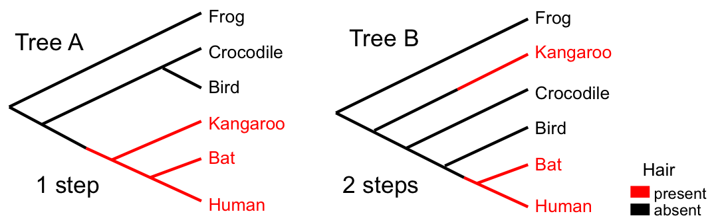
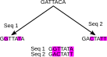
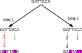

Problems with parsimony

- "Large parsimony problem" is computationally expensive
- Address using heuristic search algorithms.
- Gives point estimates: no acknowledgment of uncertainty.
- Questionable biological basis
- Not model-based, so no ability to do formal hypothesis testing or model comparison.
- Other hidden problems (such as those ad hocery always gives rise to!)
Modelling neutral sequence evolution
Why use models?
We need a model to relate what we observe (data) to what we want to
know (hypotheses and parameters).
Inference is not possible without a model!
We almost invariably choose
probabilistic models for molecular evolution, because we don't
know enough about mutation to construct a deterministic model.
Modelling genetic change
- Given two or more aligned nucleotide or amino acid sequences,
usually the first goal is to calculate some measure of sequence
similarity (or conversely distance).
- The easiest distance to compute is the p-distance: the number of
differences between two aligned sequences relative to their length.
- The p-distance is the Hamming distance normalized by the
length of the sequence. Therefore it is the proportion of positions
at which the sites differ.
- The p-distance can also be considered the probability that the two
sequences differ at a random site.
Modelling genetic change

p-distance
$p$-distance = 3/7 $\simeq 0.43$.
- Proportion of differences between two sequences.
- Usually underestimates the true distance: genetic (or evolutionary) distance $d$.
Multiple, parallel and back-substitutions

Relationship between $p$-distance and genetic distance
Continuous-time Markov chains (CTMCs)
- CTMCs are the continuous-time generalization of Markov chains
- state $X(t)$ is a function of a continuous time parameter.
- Obey the Chapman-Kolmogorov equation:
$$P(X(t_1)|X(t_0))=\sum_{X(t_i)}P(X(t_1)|P(X(t_i))P(X(t_i)|P(X(t_0))$$
Informally: you can find the probability of going from state $X(t_0)$ to $X(t_1)$ by averaging over all
intermediate states $X(t_i)$ at intermediate time $t_i$.
Relationship between Q and P in CTMCs
Instantaneous Rate Matrix $Q$
- Describes rates of character changes in an infinitesimal time interval
- Characters can be nucleotides or amino acids
- Diagonal elements are defined such that the sum of each row is zero
Transition Probability Matrix $P(t)$
- Describes probabilities of character changes over time interval t
- Elements are probabilities of observing a specific character at time t, given the starting character at time 0
Relationship between $Q$ and $P(t)$
$P(t) = exp(Qt)$, where $exp(Qt)$ is the matrix exponential of the product of $Q$ and $t$
- If you know the instantaneous rates (Q), you can calculate the probabilities over any time interval $t$ using the matrix exponential
- Matrix exponential can be calculated using eigenvalue decomposition or Taylor series expansion
Stationary Distribution
- As $t \to \infty$, $P(t)$ converges to the stationary distribution: every row becomes identical.
- For DNA models:
$ P(\infty) = \left[\begin{array}{cccc}
\pi_A & \pi_C & \pi_G & \pi_T \\
\pi_A & \pi_C & \pi_G & \pi_T \\
\pi_A & \pi_C & \pi_G & \pi_T \\
\pi_A & \pi_C & \pi_G & \pi_T
\end{array}\right]$
— the starting nucleotide no longer matters.
CTMC example
Consider a system with two states (0 and 1) and a transition rate matrix
$$Q = \left[\begin{array}{cc}
- & 2 \\
1 & -
\end{array}\right]$$
Gives rise to the following trajectories:
Time $\Delta t$ spent in state before transition:
$$ P(\Delta t|x) = \lambda e^{-\lambda \Delta t}$$
where $\lambda = \sum_{x'\neq x}Q_{xx'} = -Q_{xx}$.
Time-reversible CTMCs
- A CTMC is time-reversible if the process looks the same running forward or backward in time.
- This is a mathematical convenience, not a biological claim — evolution clearly has a direction!
- Reversibility means we don't need to know the root position to compute the likelihood of a tree (Felsenstein's "pulley principle").
- All standard substitution models (JC69, K80, HKY, GTR) are time-reversible.
Jukes-Cantor model of nucleotide substitution
$$
Q = \mu\left[\begin{array}{cccc}
-1 & \frac{1}{3} & \frac{1}{3} & \frac{1}{3}\\
\frac{1}{3} & -1 & \frac{1}{3} & \frac{1}{3}\\
\frac{1}{3} & \frac{1}{3} & -1 & \frac{1}{3}\\
\frac{1}{3} & \frac{1}{3} & \frac{1}{3} &-1
\end{array}\right]
$$
\begin{align*}
P(X(t)=j|X(0)=i) = P_{ij}(t) &= \left[e^{Qt}\right]_{ij}\\
&=\left\{\begin{array}{ll}
\frac{1}{4}+\frac{3}{4}e^{-\frac{4}{3}\mu t} & \text{for } i=j\\
\frac{1}{4}-\frac{1}{4}e^{-\frac{4}{3}\mu t} & \text{for } i\neq j
\end{array}\right.
\end{align*}
Genetic distance under Jukes-Cantor
By equating the observed $p$-distance with the JC69 transition probabilities,
we can correct for unobserved substitutions (see Decoding Genomes §5.3 for derivation):
$$\hat{d} = \widehat{\mu t} = -\frac{3}{4}\log\!\left(1-\frac{4}{3}p\right)$$
- Accounts for multiple, parallel, back-substitutions.
- Only correct if $p$ is exact: infinite sequences.
- Diverges if $p≥3/4$.
Other CTMC substitution models: Kimura 80
$$
Q = \left[\begin{array}{cccc}
\cdot & \alpha & \beta & \beta \\
\alpha & \cdot & \beta & \beta \\
\beta & \beta & \cdot & \alpha \\
\beta & \beta & \alpha &\cdot
\end{array}\right]
$$
- Also "Kimura two parameter" model.
- Allows different rates for transitions and transversions.
- Equilibrium base frequencies equal.
Other CTMC substitution models: HKY
$$
Q = \left[\begin{array}{cccc}
\cdot & \alpha\pi_G & \beta\pi_G & \beta\pi_G \\
\alpha\pi_A & \cdot & \beta\pi_A & \beta\pi_A \\
\beta\pi_C & \beta\pi_C & \cdot & \alpha\pi_C \\
\beta\pi_T & \beta\pi_T & \alpha\pi_T &\cdot
\end{array}\right]
$$
- Due to Hasegawa, Kishino, Yano (1985).
- Allows different transition transversion rates.
- Allows equilibrium base frequencies to differ.
- Most complex model for which analytical solutions are available.
Other CTMC substitution models: GTR
$$
Q = \left[\begin{array}{cccc}
\cdot & \alpha\pi_G & \beta\pi_G & \gamma\pi_G \\
\alpha\pi_A & \cdot & \delta\pi_A & \epsilon\pi_A \\
\beta\pi_C & \delta\pi_C & \cdot & \eta\pi_C \\
\gamma\pi_T & \epsilon\pi_T & \eta\pi_T &\cdot
\end{array}\right]
$$
- All models so-far have been reversible.
- GTR is the most general time-reversible model.
- Reversibility is a mathematical convenience: no biological reason!
- No useful analytical solution available (matrix exponential doesn't count).
Variable rates among sites
Not all sites evolve at the same rate. We model this variation using a gamma distribution with shape parameter $\alpha$:
- Small $\alpha$ ($<1$): most sites evolve slowly, a few evolve very fast
- Large $\alpha$: rates are more uniform across sites
- $\alpha \to \infty$: all sites evolve at the same rate
In practice, the continuous gamma distribution is approximated by a discrete gamma with $k$ rate categories (typically $k=4$), each with equal probability $1/k$.
Genetic distance variation between models
- HIV-1B vs HIV-O/SIVcpz/HIV-1C: env gene:
| $p$-distance | JC69 | K80 | Tajima-Nei |
| HIV-O | 0.391 | 0.552 | 0.560 | 0.572 |
| SIVcpz | 0.266 | 0.337 | 0.340 | 0.427 |
| HIV-1C | 0.163 | 0.184 | 0.187 | 0.189 |
- HIV-1B vs HIV-O/HIV-1C: pol gene:
| $p$-distance | JC69 | K80 | Tajima-Nei |
| HIV-O | 0.257 | 0.315 | 0.318 | 0.324 |
| HIV-1C | 0.103 | 0.111 | 0.113 | 0.114 |
The Likelihood Function
We've seen how genetic distances can be used for tree building (least squares, NJ). Likelihood methods go further by using all the alignment data directly.
The likelihood for a parameter $\theta$ under model $M$ and given data $D$ is defined as
$L(\theta|D,M)\equiv P(D|\theta,M)$.
The likelihood of $\theta$ is NOT a probability distribution over $\theta$!
Example:
- Coin tossed 5 times (identical, independent): $D=(H,T,T,H,T)$.
- Probability of sequence:
\begin{align*}
P(D|f)&=f\times (1-f)\times(1-f)\times f\times(1-f)\\
&=f^2(1-f)^3\\
&=L(f|D)
\end{align*}
Maximum likelihood inference
Sensible methods of parameter estimation from empirical data often
correspond to values which maximize the likelihood function.
For the coin example: the MLE is $\hat{f} = 2/5 = 0.4$ (the observed proportion of heads).
In general, the MLE is the value of $\theta$ that maximizes $L(\theta|D)$:
$$\hat{\theta}_{ML} = \arg\max_\theta L(\theta|D)$$
What is the likelihood of a tree?
- $$L(T|A)\equiv P(A|T) = \sum_x\sum_w P(x)P(A|x)P(w|x)P(G|w)P(G|w)$$
- For $n$ taxa there are $4^{n-1}$ possible internal node states!
- Solve using Dynamic Programming!
Felsenstein's Pruning Algorithm
- Introduced by Joseph Felsenstein, 1973.
- Recursion based on the conditional likelihood of a subtree below node $k$ having state $s$: $L_k(s)$.
- For leaves, $L_k(s)=\delta_{s,l}$ where $l$ is the leaf state.
For internal nodes,
$$L_k(s) = \left(\sum_xP(x|s)L_{c_l}(x)\right)\left(\sum_yP(y|s)L_{c_r}(y)\right)$$
Time complexity for $m$ sites: $m(n-1)4^2$. This is the workhorse of computational phylogenetics.
Maximum likelihood for Phylogenetics
- IQ-TREE (Nguyen et al., 2015; Minh et al., 2020)
- Current state-of-the-art for ML tree inference.
- Built-in model selection (ModelFinder) and ultrafast bootstrap.
- RAxML-NG (Kozlov et al., 2019)
- Optimized for very large datasets ($>10^5$ tips).
- PhyML (Guindon and Gascuel, 2003)
- Fast approximate likelihood ratio tests for branch support.
Problems with ML
- Only ever gives point estimates: no indication of uncertainty.
- Addressed using more ad hocery: bootstrap algorithms.
- Lacks rigorous theoretical basis: $L(\theta|D)$ is not a probability!
- No clear way of incorporating additional (prior?) information into the analysis.
Need a better approach!
Summary
- The genetic distance between sequence pairs can be estimated using
a CTMC model for neutral molecular evolution.
- Addresses some of the problems with the parsimony approach.
- Have focused on 4 state DNA models, but it is possible to consider
models for proteins (20 amino acid states) and models that take
into account codons and the genetic code (64 states).
- Substitution model approaches to estimating genetic distance do not
deal with insertions and deletions of genetic material: they presuppose
a sequence alignment.
- Can be used within the context of a least-squares framework to find
best-fitting phylogenies.
- Better used as the basis for a tree likelihood.
- Likelihood can be used on its own for phylogenetic inference.
Recommended Reading
- Chapter 5: Molecular Evolution
- 5.2 Continuous-time Markov chains
- 5.3 Substitution models (JC69, K80, HKY, GTR)
- 5.4 Rate heterogeneity among sites
- Chapter 6.5: Maximum likelihood tree inference